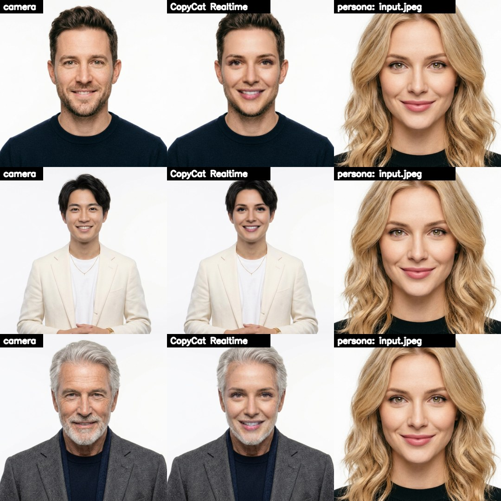

What it looks like
Each row: a face as the camera sees it, the same frame through Persona Cam, and the persona it took the face from. The pose, the expression, the hair and the clothes stay the camera's; the face is the persona's. Click to enlarge.

Use it
- Put the persona's face in
personas/input.jpeg(the repo comes with one). - Start
run.bat(orrun.ps1,run.sh). The first time it sets itself up: Python 3.11, PyTorch's CUDA libraries, InsightFace and the GPU ONNX runtime (about 3 GB), the swap model (about 550 MB) and the occlusion model. - A dialog asks: use the default input? No opens a file picker in
personas/. - In your call, pick the camera OBS Virtual Camera. OBS Studio must be installed for its virtual camera; it doesn't have to be running.
Keys
| S | swap on / off |
| O | occlusion on / off: hands, hair, a cup stay in front |
| V | virtual camera on / off |
| P | pick another persona, no restart |
| R | read the persona's picture again |
| Q Esc | quit |
Sliders
| smooth % | steadies where the face sits from frame to frame |
| strength % | how much of the swapped face shows |
The personas
Generate them rather than using photos of real people: becoming a real person on a call isn't fair on them. What works best: looking straight at the camera, the whole face visible, even light, sharp, a neutral face or a slight smile, one face per picture.
How it works
Find you
InsightFace's SCRFD finds your face in every frame; its five key points are steadied against the last frame's, so the swap doesn't jitter.
Swap
inswapper_128 draws the persona's identity, read once from her picture, onto your face, on the GPU.
What's in front
FaceFusion's XSeg occluder marks hands, hair and cups in front of your face, and the swap is left out there.
You, still
Your own eyes show through when you blink, and the result goes back into the frame, to the preview and OBS's virtual camera.
InsightFace's models (buffalo_l, inswapper_128) are for non-commercial use only.